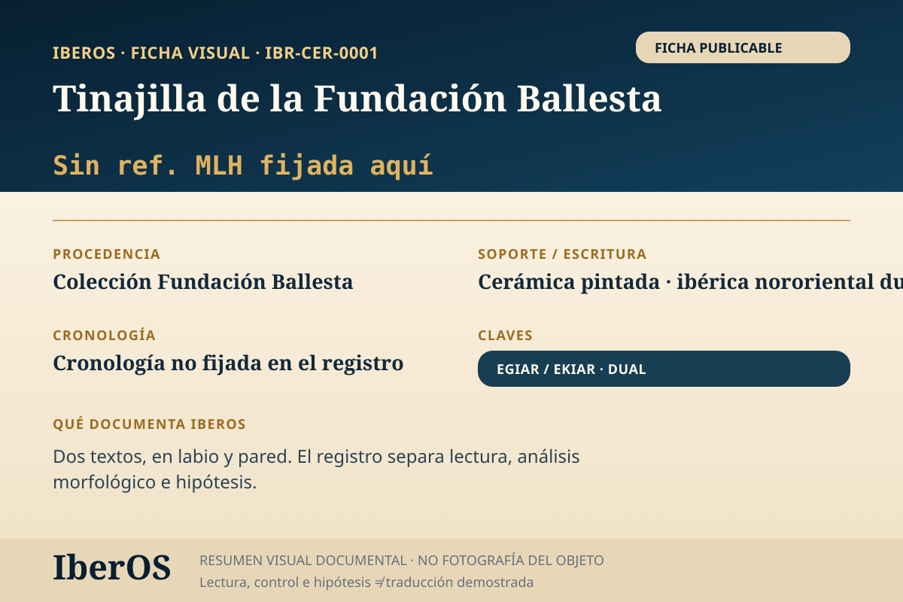

IBR-CER-0001 · Sin ref. MLH fijada aquí
Tinajilla de la Fundación Ballesta
Procedencia publicada; colección Fundación Ballesta · Cerámica pintada
Incluida · EGIAR_EKIAR
Lectura, transliteración e hipótesis no equivalen a traducción demostrada.
Abrir ficha indexable →